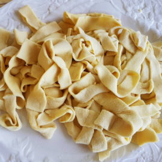

Lasagne
;
Lagane is a type of rustic fresh pasta typical of the southern Italian regions. It may differ in size depending on the cook and the area, but is usually thicker and wider than tagliatelle but narrower than lasagna.
Ingridents
- 1/2 cup flour
- 150ml of water
- Chickpea
Steps
- Sift the flour into a mound. Make a hole in the center and add water a little at a time using a fork to mix the water into the flour.
- Knead and work the mixture until you get a smooth elastic dough (15 minutes).
- Roll the dough into a ball and let it rest for half an hour at room temperature wrapped in cling film.
- Put the dough on a floured board or surface. Cut about one third off and roll this out with a rolling pin until you get about 2mm of thickness and a shape as close to rectangular as possible. If you have a pasta machine you can use it to produce lasagna sheets.
- Roll the sheet of pasta up and then cut it into sections of 2-3 cms in width. Unroll the cut sections and your lagane are ready! Continue with the rest of the dough.
- Let the pasta rest for about 20 minutes before cooking it. Fresh pasta usually cooks very quickly, but the exact time will depend on the thickness of your pasta.
- Serve in abowl with garnishing of our choice